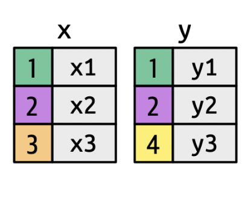
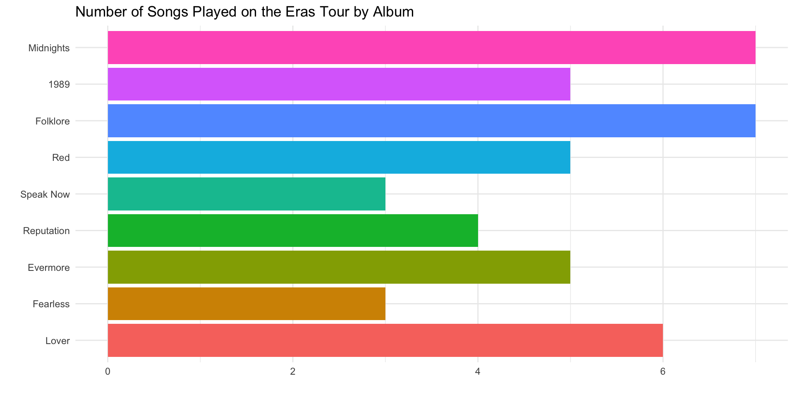
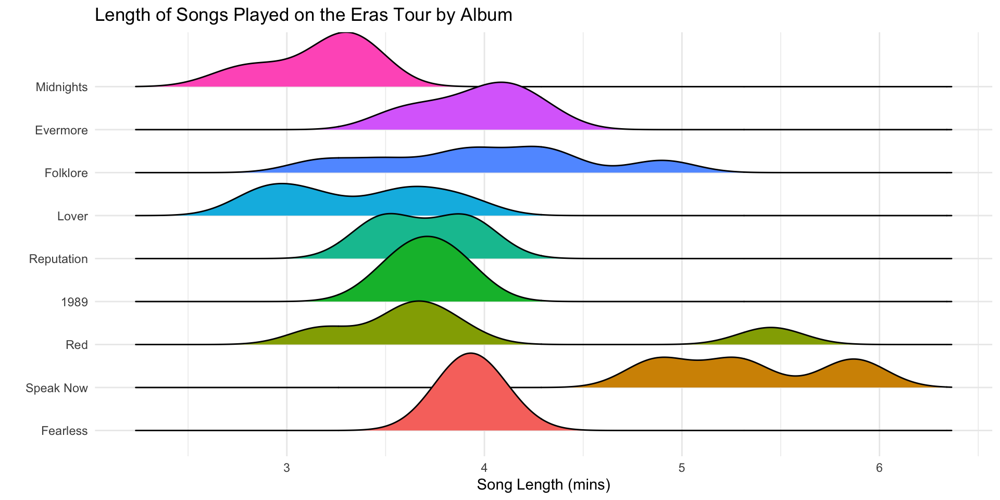
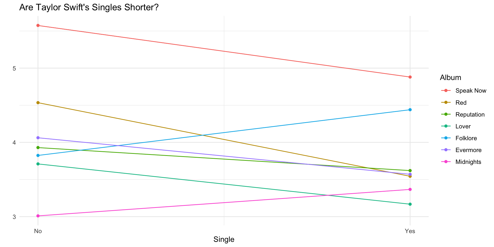

if_any(.cols = everything(), .fns = ~ is.na(.x))Extending Joins, Factors, Clean Variable Names
Lifceycle Stages
As packages get updated, the functions and function arguments included in those packages will change.
- The accepted syntax for a function may change.
- A function/functionality may disappear.
![The image shows a flow diagram representing the lifecycle stages of a feature or process. It consists of four colored boxes with arrows connecting them. The green box in the center labeled stable is the main stage. To the left, an orange box labeled experimental has an arrow pointing toward stable, indicating that experimental features can progress to become stable. From stable, one arrow points upward to another orange box labeled deprecated, indicating that stable features can become deprecated. Another arrow points right to a dark blue box labeled superseded, showing that stable features can also be replaced or superseded.](images/lifecycle.png)
Learn more about lifecycle stages of packages, functions, function arguments in R.
Lifceycle Stages
![The image shows the documentation for the summarise() (or summarize(), using the American spelling) function in R, commonly used in the dplyr package for data manipulation. The summarise() function is used to create summary statistics for data frames or tibbles. The key arguments include .data, which is the data frame or tibble input, and ..., which represents name-value pairs of summary functions. The .by and .groups arguments are optional and used to control grouping behavior in the summarization. A key point in the documentation is that returning values with size 0 or greater than 1 in summary functions, such as min(), n(), or sum(), was deprecated as of version 1.1.0. Instead, users are encouraged to use the reframe() function, which replaces the deprecated behavior. The lifecycle badge marks the deprecation of this feature, ensuring that users know that previous versions' behavior should be updated for compatibility with future versions of the package.](images/summarize_lifecycle.png)
Keys
A key uniquely identifies an observation in a data set.
- To combine (join) two datasets, the key needs to be present in both.
![An image of two datasets, one named military_expenditures and one named region_totals. The military_expenditures datast has five (visible) columns titled: Country, Year, Expenditures, Notes, Reporting year. The region_totals dataset has 13 (visible) columns: Region, 1950, 1951, 1952, 1953, 1954, 1955, 1956, 9157, 1958, 1959, 1960, and 1961. The Country column of military_expenditures is highlighted in red and the Region column of the region_totals column is also highlighted in red. The image is highlighting these columns as they are 'keys' linking the two datasets with one another.](images/military-relational-diagram.jpg)
Filtering Joins: semi_join()
Keeps observations when their keys are present in both datasets, but only keeps variables from the first dataset.
![A looping animation shows two tables side by side and the result of a semi join. The left table (x) has keys 1 (red), 2 (blue), 3 (green) paired with x1, x2, x3. The right table (y) has keys 1 (red), 2 (blue), 4 (purple) paired with y1, y2, y4. Matching key rows (1 and 2) are connected. The resulting output table includes only the rows from the left table that have matches in the right table: key 1 with x1 and key 2 with x2. The left row with key 3 is dropped, and no new columns from y are shown.](https://github.com/gadenbuie/tidyexplain/raw/main/images/semi-join.gif)
© Garrick Aden-Buie
Filtering Joins: anti_join()
Removes observations when their keys are present in both datasets, and only keeps variables from the first dataset.
![A looping animation shows two tables being compared under an ‘anti join’ operation. The left table has keys 1 (red), 2 (blue), 3 (green) paired with values x1, x2, x3. The right table has keys 1 (red), 2 (blue), and 4 (purple) paired with values y1, y2, y4. Lines indicate matching keys (1 and 2). The resulting table on the right contains only the rows from the left table that do not have a match in the right: key 3 with x3 (green). Keys 1 and 2 are excluded because they have matches in the right table.](https://github.com/gadenbuie/tidyexplain/raw/main/images/anti-join.gif)
© Garrick Aden-Buie
IMDb Movies Data
![A diagram depicting the relationships between various tables in a movie database. The tables and their columns are as follows. directors_genres: Contains 'director_id' (int), 'genre' (varchar), and 'prob' (float). Linked to the 'directors' table by 'director_id.' movies_directors: Contains 'director_id' (int) and 'movie_id' (int). Linked to both the 'directors' and 'movies' tables by 'director_id' and 'movie_id.' movies_genres: Contains 'movie_id' (int) and 'genre' (varchar). Linked to the 'movies' table by 'movie_id.' roles: Contains 'actor_id' (int), 'movie_id' (int), and 'role' (varchar). Linked to both the 'actors' and 'movies' tables by 'actor_id' and 'movie_id.' The following entity tables are represented at the bottom: directors: Contains 'id' (int), 'first_name' (varchar), and 'last_name' (varchar). movies: Contains 'id' (int), 'name' (varchar), 'year' (int), and 'rank' (float). actors: Contains 'id' (int), 'first_name' (varchar), 'last_name' (varchar), and 'gender' (char). Arrows represent relationships between the various tables, with foreign keys connecting them.](images/imdb-keys.png)
inner_join()
Keeps observations when their keys are present in both datasets.


More Mutating Joins
left_join()– keep only (and all) observations present in the left data setright_join()– keep only (and all) observations present in the right data setfull_join()– keep only (and all) observations present in both data sets
![Four Venn diagrams illustrating different types of joins between two datasets, labeled 'x' and 'y.' inner_join(x, y): Shows two overlapping circles with only the intersection shaded, representing records that are common to both 'x' and 'y.' left_join(x, y): Shows two overlapping circles with the left circle ('x') fully shaded and the intersection shaded, representing all records from 'x' and the matching records from 'y.' right_join(x, y): Shows two overlapping circles with the right circle ('y') fully shaded and the intersection shaded, representing all records from 'y' and the matching records from 'x.' full_join(x, y): Shows two overlapping circles with both circles fully shaded, representing all records from both 'x' and 'y,' including those without matches.](images/joins.png)
Joining Multiple Data Sets
![The image illustrates a relational database schema involving three tables: movies_directors, directors, and movies. The movies_directors table has two columns: director_id (int) and movie_id (int). The directors table contains id (int), first_name (char), and last_name (char), while the movies table includes id (int), name (char), year (int), and rank (float). A caution is noted, highlighting that there are two columns named id, but they store different types of information. The goal is to keep only observations that appear in all three datasets, which requires using two calls to the inner_join() function. There's also a suggestion to rename the column name in the final dataset, which would contain columns like director_id, movie_id, first_name, last_name, name, year, and rank.](images/multiple_joins.png)
movies_directors |>
inner_join(directors,
by = join_by(director_id == id)
)| director_id | movie_id | first_name | last_name |
|---|---|---|---|
| 429 | 300229 | Andrew | Adamson |
| 2931 | 254943 | Darren | Aronofsky |
| 9247 | 124110 | Zach | Braff |
| 11652 | 10920 | James (I) | Cameron |
| 11652 | 333856 | James (I) | Cameron |
| 14927 | 192017 | Ron | Clements |
| 15092 | 109093 | Ethan | Coen |
| 15092 | 237431 | Ethan | Coen |
| 15093 | 109093 | Joel | Coen |
| 15093 | 237431 | Joel | Coen |
| 15901 | 130128 | Francis Ford | Coppola |
| 15906 | 194874 | Sofia | Coppola |
| 16816 | 350424 | Cameron | Crowe |
| 17810 | 297838 | Frank | Darabont |
| 22104 | 224842 | Clint | Eastwood |
| 24758 | 112290 | David | Fincher |
| 28395 | 46169 | Mel (I) | Gibson |
| 35573 | 18979 | Ron | Howard |
| 35838 | 257264 | John (I) | Hughes |
| 37872 | 300229 | Vicky | Jenson |
| 38746 | 238695 | Mike (I) | Judge |
| 41975 | 314965 | David | Koepp |
| 44291 | 17173 | John (I) | Landis |
| 46315 | 344203 | Jay | Levey |
| 48115 | 313459 | George | Lucas |
| 56332 | 192017 | John | Musker |
| 58201 | 30959 | Christopher | Nolan |
| 58201 | 210511 | Christopher | Nolan |
| 65940 | 111813 | Rob | Reiner |
| 66849 | 306032 | Guy | Ritchie |
| 68161 | 116907 | Herbert (I) | Ross |
| 74758 | 238072 | Steven | Soderbergh |
| 76524 | 167324 | Oliver (I) | Stone |
| 78273 | 176711 | Quentin | Tarantino |
| 78273 | 176712 | Quentin | Tarantino |
| 78273 | 267038 | Quentin | Tarantino |
| 78273 | 276217 | Quentin | Tarantino |
| 82525 | 147603 | Paul (I) | Verhoeven |
| 83616 | 207992 | Andy | Wachowski |
| 83617 | 207992 | Larry | Wachowski |
| 88802 | 256630 | Unknown | Director |
movies_directors |>
inner_join(directors,
by = join_by(director_id == id)
) |>
inner_join(movies,
by = join_by(movie_id == id)
) |>
rename(movie_name = name)| director_id | movie_id | first_name | last_name | movie_name | year | rank |
|---|---|---|---|---|---|---|
| 429 | 300229 | Andrew | Adamson | Shrek | 2001 | 8.1 |
| 2931 | 254943 | Darren | Aronofsky | Pi | 1998 | 7.5 |
| 9247 | 124110 | Zach | Braff | Garden State | 2004 | 8.3 |
| 11652 | 10920 | James (I) | Cameron | Aliens | 1986 | 8.2 |
| 11652 | 333856 | James (I) | Cameron | Titanic | 1997 | 6.9 |
| 14927 | 192017 | Ron | Clements | Little Mermaid, The | 1989 | 7.3 |
| 15092 | 109093 | Ethan | Coen | Fargo | 1996 | 8.2 |
| 15092 | 237431 | Ethan | Coen | O Brother, Where Art Thou? | 2000 | 7.8 |
| 15093 | 109093 | Joel | Coen | Fargo | 1996 | 8.2 |
| 15093 | 237431 | Joel | Coen | O Brother, Where Art Thou? | 2000 | 7.8 |
| 15901 | 130128 | Francis Ford | Coppola | Godfather, The | 1972 | 9.0 |
| 15906 | 194874 | Sofia | Coppola | Lost in Translation | 2003 | 8.0 |
| 16816 | 350424 | Cameron | Crowe | Vanilla Sky | 2001 | 6.9 |
| 17810 | 297838 | Frank | Darabont | Shawshank Redemption, The | 1994 | 9.0 |
| 22104 | 224842 | Clint | Eastwood | Mystic River | 2003 | 8.1 |
| 24758 | 112290 | David | Fincher | Fight Club | 1999 | 8.5 |
| 28395 | 46169 | Mel (I) | Gibson | Braveheart | 1995 | 8.3 |
| 35573 | 18979 | Ron | Howard | Apollo 13 | 1995 | 7.5 |
| 35838 | 257264 | John (I) | Hughes | Planes, Trains & Automobiles | 1987 | 7.2 |
| 37872 | 300229 | Vicky | Jenson | Shrek | 2001 | 8.1 |
| 38746 | 238695 | Mike (I) | Judge | Office Space | 1999 | 7.6 |
| 41975 | 314965 | David | Koepp | Stir of Echoes | 1999 | 7.0 |
| 44291 | 17173 | John (I) | Landis | Animal House | 1978 | 7.5 |
| 46315 | 344203 | Jay | Levey | UHF | 1989 | 6.6 |
| 48115 | 313459 | George | Lucas | Star Wars | 1977 | 8.8 |
| 56332 | 192017 | John | Musker | Little Mermaid, The | 1989 | 7.3 |
| 58201 | 30959 | Christopher | Nolan | Batman Begins | 2005 | NA |
| 58201 | 210511 | Christopher | Nolan | Memento | 2000 | 8.7 |
| 65940 | 111813 | Rob | Reiner | Few Good Men, A | 1992 | 7.5 |
| 66849 | 306032 | Guy | Ritchie | Snatch. | 2000 | 7.9 |
| 68161 | 116907 | Herbert (I) | Ross | Footloose | 1984 | 5.8 |
| 74758 | 238072 | Steven | Soderbergh | Ocean's Eleven | 2001 | 7.5 |
| 76524 | 167324 | Oliver (I) | Stone | JFK | 1991 | 7.8 |
| 78273 | 176711 | Quentin | Tarantino | Kill Bill: Vol. 1 | 2003 | 8.4 |
| 78273 | 176712 | Quentin | Tarantino | Kill Bill: Vol. 2 | 2004 | 8.2 |
| 78273 | 267038 | Quentin | Tarantino | Pulp Fiction | 1994 | 8.7 |
| 78273 | 276217 | Quentin | Tarantino | Reservoir Dogs | 1992 | 8.3 |
| 82525 | 147603 | Paul (I) | Verhoeven | Hollow Man | 2000 | 5.3 |
| 83616 | 207992 | Andy | Wachowski | Matrix, The | 1999 | 8.5 |
| 83617 | 207992 | Larry | Wachowski | Matrix, The | 1999 | 8.5 |
| 88802 | 256630 | Unknown | Director | Pirates of the Caribbean | 2003 | NA |
forcats
We use this package to…
turn character variables into factors.
make factors by discretizing numeric variables.
rename or reorder the levels of an existing factor.

forcats loads with tidyverse!
The packages forcats (“for categoricals”) helps wrangle categorical variables.
Re-ordering Factors in ggplot2
The bars follow the default factor levels.

We can order factor levels to order the bar plot.
full_eras |>
mutate(Album = fct(Album,
levels = c("Fearless",
"Speak Now",
"Red",
"1989",
"Reputation",
"Lover",
"Folklore",
"Evermore",
"Midnights")
)
) |>
ggplot(mapping = aes(y = Album,
fill = Album)
) +
geom_bar() +
theme_minimal() +
theme(legend.position = "none") +
labs(x = "",
y = "",
title = "Number of Songs Played on the Eras Tour by Album")
Re-ordering Factors in ggplot2
The ridge plots follow the order of the factor levels.

Inside ggplot(), we can order factor levels by a summary value.

Re-ordering Factors in ggplot2
The legend follows the order of the factor levels.
full_eras |>
filter(!Album %in% c("1989","Fearless")) |>
group_by(Album, Single) |>
summarise(avg_len = mean(Length)) |>
ggplot(mapping = aes(x = Single,
y = avg_len,
color = Album)) +
geom_point(size = 1.5) +
geom_line() +
theme_minimal() +
scale_x_continuous(breaks = c(0,1),
labels = c("No", "Yes")
) +
labs(y = "",
title = "Are Taylor Swift's Singles Shorter?",
color = "Album")
Inside ggplot(), we can order factor levels by the \(y\) values associated with the largest \(x\) values.
full_eras |>
filter(!Album %in% c("1989","Fearless")) |>
group_by(Album, Single) |>
summarise(avg_len = mean(Length)) |>
ggplot(mapping = aes(x = Single,
y = avg_len,
color = fct_reorder2(.f = Album,
.x = Single,
.y = avg_len)
)
) +
geom_point(size = 1.5) +
geom_line() +
theme_minimal() +
scale_x_continuous(breaks = c(0,1),
labels = c("No", "Yes")
) +
labs(y = "",
title = "Are Taylor Swift's Singles Shorter?",
color = "Album")
Lab 4: Childcare Costs in California
![The image is a color-coded map of the United States, showing the cost of childcare across different states. The map uses a gradient scale from light green (representing lower costs around $5,000) to dark blue (representing higher costs around $21,000). States with the most expensive childcare, such as Massachusetts ($21,019) and Washington, D.C. ($20,913), are shaded in dark blue, indicating the highest costs. States with lower costs, such as Mississippi ($5,436) and Alabama ($6,001), are shaded in light green. The map's data comes from the Economic Policy Institute, with the source indicated as Money Scoop, and was created using Datawrapper.](images/childcare-cost-map.png)
![The image displays a map of California divided into regions based on the 2020 Census, along with a table listing the counties in each region. The map on the left uses different colors to highlight each of the 10 regions, with areas such as the San Francisco Bay Area and South Coast labeled. A legend at the bottom of the map assigns numbers and colors to each region: Superior California, North Coast, San Francisco Bay Area, Northern San Joaquin Valley, Central Coast, Southern San Joaquin Valley, Inland Empire, Los Angeles County, Orange County, and San Diego/Imperial. On the right side, a table lists the regions by number and their respective counties. For example, Region 1 includes counties like Butte, Colusa, and El Dorado, while Region 8 consists solely of Los Angeles County. Other regions contain a mix of multiple counties, such as Region 3, which includes Alameda, Contra Costa, and San Francisco.](images/ca-counties.png)